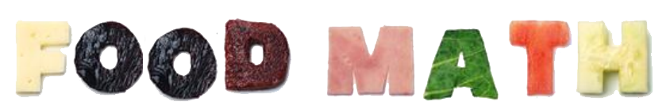
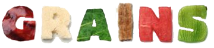
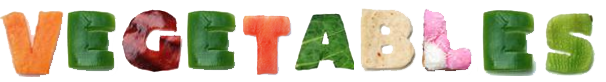

Healthy food choices make healthier kids! Every day,
9-10 year old kids should have:
Grains: 6 ounces Vegetables: 2½ cups Fruit: 1½ cups Milk:
3 cups Protein: 5 ounces
Design a menu for one whole day, choosing from the foods listed below.
Put a B for breakfast, L for lunch, D for
dinner and S for snack next to the items you choose.
You can select an item more than once, just make sure the
totals for the day match the guidelines listed above.

- 1 slice bread = 1 ounce (total: 6 ounces)
- 5 crackers = 1 ounce
- 1 cup breakfast cereal = 1 ounce
- ½ cup rice = 1 ounce
- 1 cup pasta = 2 ounces
- 1 hamburger bun = 2 ounces
- 3 cups popcorn = 1 ounce

- 6 baby carrots = ½ cup
- 1 ear of corn= 1 cup
- 1 baked potato = 1 cup
- 1 sweet potato = 1 cup
- 1 cup lettuce = ½ cup
- 3 pieces broccoli = 1 cup
- 1 cup fat-free milk = 1 cup
- 1 snack-sized yogurt = ½ cup
- 2 ounces American cheese = 1 cup
- 1 ½ ounces cheddar cheese = 1 cup
- 1 ½ cups ice cream = 1 cup
- handful of nuts = 2 ounces
- 1 cup split pea soup = 2 ounces
- 1 small serving chicken = 3 ounces
- 1 small hamburger = 3 ounces
- 1 hard-boiled egg = 1 ounce
- 1 tablespoon peanut butter = 1 ounce
- 1 slice turkey = 1 ounce
- 1 small apple = 1 cup
- 1 large orange = 1 cup
- 1 cup orange juice = 1 cup
- 1 plum = ½ cup
- 1 small box raisins = ½ cup
- 1 wedge cantaloupe = ½ cup
- 1 wedge watermelon = 1 cup